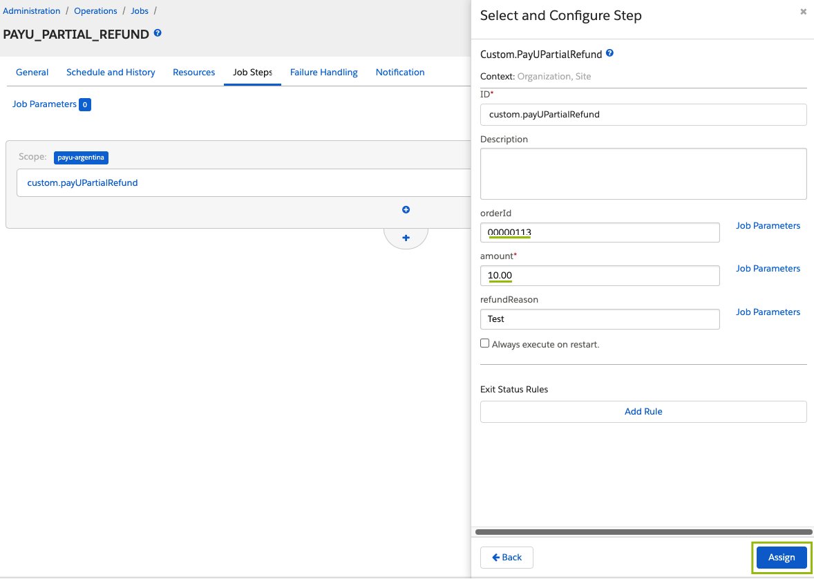
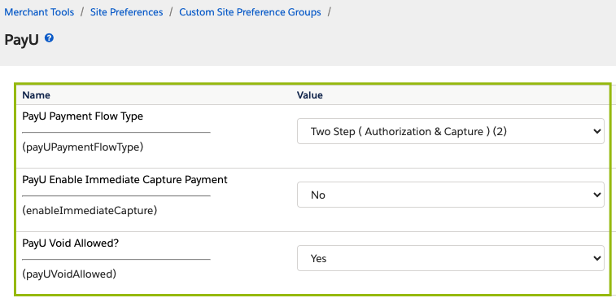
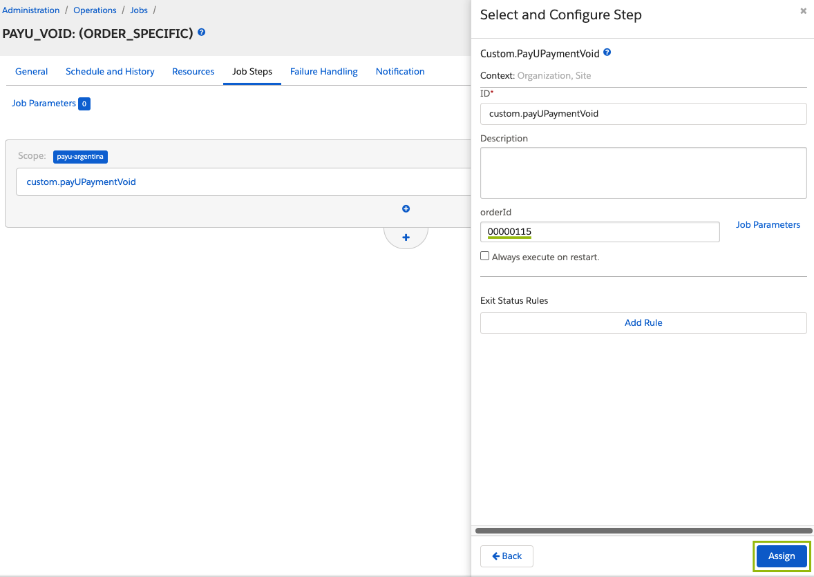
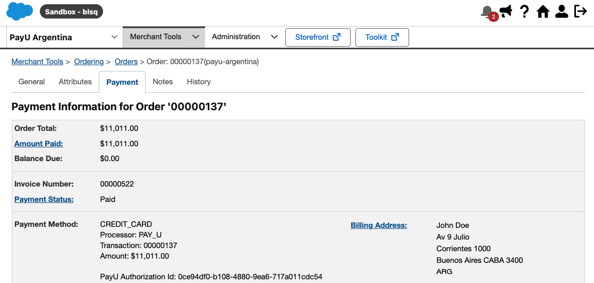
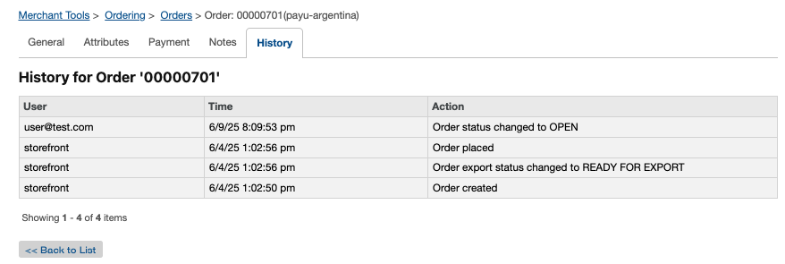
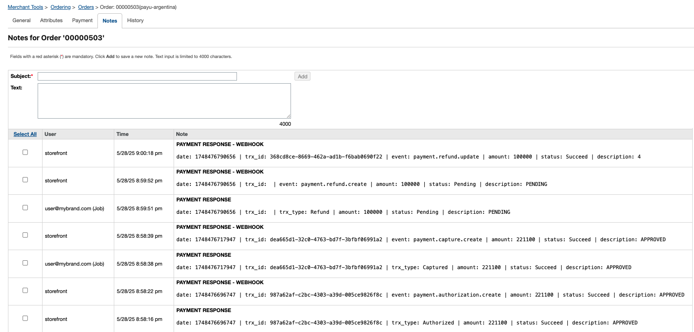

Salesforce Commerce Cloud
Salesforce Commerce Cloud (SFCC) es una plataforma de comercio digital empresarial basada en la nube que permite a las marcas ofrecer experiencias de compra personalizadas y escalables. Para más información, visita el sitio web oficial de Salesforce Commerce Cloud.
Beneficios
Al integrar el cartridge de PayU, puedes obtener los siguientes beneficios:
- Integración rápida: Componentes preconfigurados que aceleran el desarrollo.
- Esfuerzo técnico mínimo: No se requiere codificación compleja.
- Mantenimiento continuo: PayU gestiona actualizaciones y mejoras.
- Cumplimiento PCI-DSS: Garantiza seguridad y cumplimiento normativo.
- Funcionalidad completa: Soporte para pagos con tarjeta, efectivo, 3DS, reembolsos y más.
- Basado en SFRA: Totalmente alineado con la arquitectura recomendada por Salesforce.
- Configuración personalizable: Selecciona los métodos de pago y reglas de negocio que mejor se adapten a tus necesidades.
- Información integrada: Acceso directo a los datos transaccionales dentro de Salesforce.
Requisitos previos
Antes de comenzar la integración, asegúrate de contar con lo siguiente:
- Una cuenta activa de PayU Latam.
- Una cuenta activa de PayU Enterprise (PaymentsOS) en modo producción/live. Para obtener detalles sobre cómo habilitar el modo live, consulta Activar tu cuenta de PayU Enterprise.
- Una instancia de Salesforce Commerce Cloud (Business Manager) con acceso de administrador.
- Acceso al entorno de desarrollo de tu tienda SFCC, incluyendo permisos para instalar y configurar catridges.
- Acceso al repositorio del cartridge de PayU.
Nota
Para probar esta solución, no necesitas credenciales de producción de PayU Latam o PayU Enterprise. Usa las credenciales proporcionadas en Probar tu solución. Si estás probando con 3DSecure, consulta las credenciales en Prueba de autenticación 3DS. Para configurar la cuenta, consulta Configurar tu cuenta PayU Enterprise.Compatibilidad con SFCC
Para asegurar la compatibilidad, ten en cuenta los siguientes requisitos y consideraciones técnicas:
- El cartridge es compatible con SFRA versión 7.0.1 o superior.
- Debes instalar la versión 8.9.4 o superior de Node.js en tu entorno de desarrollo.
Nota
Antes de continuar, asegúrate de que tu entorno de Salesforce esté correctamente configurado. Para obtener ayuda, consulta la documentación oficial de Salesforce.Funcionalidades de PayU Latam compatibles
La siguiente tabla muestra la disponibilidad del cartridge de PayU por país, junto con los métodos de pago compatibles:
| País | Tipo de método de pago | Nombre del método de pago en SFCC |
|---|---|---|
Argentina
|
Tarjeta | American Express, Argencard, Cabal, Cencosud, DINERS, Master Card, Naranja, Visa Notas: |
| Efectivo | COBRO_EXPRESS, PAGOFACIL, RAPIPAGO | |
Brasil
|
Tarjeta | American Express, Master Card, Visa |
| Efectivo | BOLETO BANCARIO | |
Chile
|
Tarjeta | American Express, Master Card, Visa |
Colombia
|
Tarjeta | American Express, DINERS, Master Card, Visa |
| Efectivo | BANK REFERENCED, EFECTY, OTHERS CASH Notas: |
|
México
|
Tarjeta | American Express, Master Card, Visa |
| Efectivo | BANK REFERENCED, OXXO, OTHERS CASH MX, SEVEN ELEVEN Notas: |
|
| Transferencia bancaria | SPEI | |
Panamá
|
Tarjeta | Master Card, Visa |
Perú
|
Tarjeta | American Express, DINERS, Master Card, Visa |
| Efectivo | PAGOEFECTIVO | |
| Billetera digital | Yape |
Consideraciones
Revisa las siguientes consideraciones clave para garantizar una integración fluida y conforme en los países compatibles.
- Todos los países admiten procesamiento de pagos en un solo paso o en dos pasos: autorización y captura en una sola solicitud, o autorización y captura en pasos separados. En Colombia, el flujo de dos pasos solo es compatible con MasterCard y Visa.
- Se admiten las siguientes operaciones financieras: Cargo, Autorización, Captura, Anulación y Reembolso.
- Todos los países admiten análisis de fraude y los procesos de validación manual de PayU.
- Argentina, Brasil, Colombia, México y Perú admiten 3D Secure para MasterCard y Visa.
- Las promociones basadas en cuotas —también conocidas como meses sin intereses— son compatibles mediante condiciones de enrutamiento definidas en el motor de decisiones de PayU Enterprise.
Configuración inicial, instalación y configuración
Esta sección describe los pasos necesarios para instalar y configurar correctamente el cartridge de PayU en tu sitio SFCC.
Activar tu cuenta PayU Enterprise
Para comenzar, regístrate en el sitio web oficial de PayU Enterprise (PaymentsOS). Proporciona tu nombre, el nombre y sitio web de tu empresa, y la dirección de correo electrónico del usuario administrador. Una vez que completes el registro, recibirás un correo electrónico para establecer tu contraseña. Después de eso, podrás acceder al Centro de Control de PayU Enterprise.
De forma predeterminada, las cuentas nuevas están configuradas en modo de prueba. Para habilitar las transacciones en vivo, contacta a tu gerente de cuenta y envía una solicitud con los siguientes datos:
- Merchant ID de PayU Latam: Localiza el Merchant ID de tu cuenta LATAM en el Panel de Administración de PayU.
- Account ID de PayU Enterprise: Encuentra tu Account ID en el panel de control de PayU Enterprise haciendo clic en tu nombre de usuario en la esquina superior derecha.

Configurar tu cuenta PayU Enterprise
PayU Enterprise (PaymentsOS) conecta tu cuenta de PayU Latam con tu tienda de Salesforce Commerce Cloud (SFCC).
Para comenzar, debes configurar lo siguiente en tu cuenta de PayU Enterprise:
- El proveedor de pagos de PayU Latam
- Tu unidad de negocio
- El webhook para recibir notificaciones en tu sitio SFCC
Nota
Repite los pasos de las secciones Configurar un proveedor de pagos, Configurar una unidad de negocio y Configurar un webhook para cada uno de tus sitios y cuentas de PayU Latam.Configurar un proveedor de pagos
Una instancia de proveedor de pagos en PayU Enterprise almacena tus credenciales de procesamiento de pagos de PayU Latam.
Sigue estos pasos para configurar un proveedor:
- En el Panel de Control de PayU Enterprise, selecciona el entorno TEST o LIVE en la parte superior. Luego, navega a Configuraciones > Servicios, busca y selecciona el proveedor PayULatam.
- Completa los siguientes datos para crear la instancia del proveedor de pagos:
| Campo | Descripción |
|---|---|
| Nombre de configuración | Ingresa un nombre para la configuración del proveedor. Ejemplo: “PayU Argentina”. |
| Descripción (Opcional) | Descripción opcional para el proveedor de pagos. Ejemplo: “Mi proveedor de pagos en Argentina.” |
| apiLogin | Tu nombre de usuario de PayU Latam para la conexión. |
| apiKey | Tu clave única de comercio de PayU Latam para la conexión. |
| accountId | Tu ID de cuenta de PayU Latam, según tu país de operación. |
| merchantId | Tu ID de comercio de PayU Latam. |
| partnerId | Identificador obligatorio para SFCC. Utiliza: ZOOZ-SALESFORCE. |
| paymentCountry | País de procesamiento en formato ISO 3166 Alpha-3. Ejemplo: ARG, BRA, CHL, COL, MEX, PAN o PER. |
| multiCapture | Deja este campo con su configuración predeterminada. No lo modifiques. |
| cashRedirect | Deja este campo con su configuración predeterminada. No lo modifiques. |
Los campos apiLogin, apiKey, accountId y merchantId son diferentes para cada entorno seleccionado en la parte superior del panel de control.
- Para el entorno TEST, utiliza las credenciales provistas en Prueba tu solución. Si usas 3DSecure, consulta las credenciales en Pruebas de autenticación 3DS.
- Para el entorno LIVE, debes obtener tus credenciales desde el Panel de Control de PayU Latam. Para más información, consulta Cómo obtener las variables de integración.
- Una vez completado el formulario, haz clic en Crear para finalizar.
Configurar una unidad de negocio
Una unidad de negocio vincula la configuración del proveedor creada en la sección anterior con tus credenciales de API de PayU Enterprise, permitiendo el procesamiento de transacciones en tu sitio Salesforce Commerce Cloud (SFCC).
Sigue estos pasos para configurar la unidad de negocio:
-
En el Panel de Control de PayU Enterprise, selecciona el entorno TEST o LIVE en la parte superior. Luego ve a Configuraciones > Unidades de Negocio y haz clic en Crear una Unidad de Negocio.
-
Completa la siguiente información:
| Campo | Descripción |
|---|---|
| Nombre de la Unidad de Negocio | Debe estar en minúsculas y sin espacios. Una vez creada, no se puede cambiar el nombre, así que asegúrate de que sea correcto. |
| Descripción (Opcional) | Descripción opcional para tu unidad de negocio. |
En la opción para seleccionar un proveedor por defecto para la unidad de negocio, elige la configuración del proveedor que creaste en la sección anterior. Luego haz clic en Crear.
- Una vez creada la unidad de negocio, el sistema generará un Application ID, una Public API Key y una Private API Key. Estas credenciales son necesarias para habilitar el procesamiento de pagos en tu sitio web SFCC. Asegúrate de guardarlas, ya que las necesitarás en el paso de Gestionar preferencias personalizadas del sitio.
Configurar un webhook
El webhook permite que tu sitio reciba notificaciones automáticas de PayU cada vez que cambia el estado de una transacción. Esto es útil para actualizar pagos pendientes en tiempo real, como por ejemplo:
- Pagos en efectivo que se confirman después de ser completados.
- Verificaciones de fraude antes de autorizar el pago.
- Autenticaciones 3D Secure que requieren un desafío por parte del banco.
- Reembolsos que quedan pendientes y luego son aprobados o rechazados.
- Cualquier otra actualización relevante.
Para habilitar el webhook, sigue estos pasos:
-
En el Panel de Control de PayU Enterprise, selecciona el entorno TEST o LIVE en la parte superior. Luego ve a Configuraciones > Webhooks y haz clic en Crear URL de confirmación.
-
En el campo URL de confirmación, ingresa una URL con el siguiente formato:
<TuURLdelSitio>/PayU-Webhook. -
En la tabla de eventos, habilita los eventos Create y Update para las siguientes operaciones financieras: Authorization, Capture, Charge, Refund y Void.
-
En Unidades de Negocio Asociadas, selecciona la unidad de negocio que creaste en la sección anterior.
-
Finalmente, haz clic en Crear para guardar tu webhook.
Instalar el cartridge de PayU en tu sitio
Para habilitar el procesamiento de pagos con PayU en tu sitio de Salesforce Commerce Cloud (SFCC), debes instalar y configurar el cartridge de PayU. Esta sección te guía a través de los pasos necesarios para integrar el cartridge en el código base del storefront.
Nota
Para llevar a cabo este procedimiento, debes estar familiarizado con la programación de Salesforce Commerce Cloud (SFCC).-
Clona el repositorio
PayU-Cartridgese intégralo en la base de código de tu proyecto. -
Dentro de la carpeta
PayU-Cartridges, localiza el archivopackage.jsony asegúrate de que la propiedadpathsapunte correctamente aapp_storefront_base:
"paths": {
"base": "../storefront-reference-architecture/cartridges/app_storefront_base"
}
Para hacer esto, deberás descargar el repositorio oficial de Salesforce Commerce Cloud desde GitHub. Esto requiere:
- Tener habilitada la autenticación en dos pasos (2FA) en tu cuenta de GitHub.
- Iniciar sesión con tus credenciales de SFCC.
- Seguir las instrucciones de acceso proporcionadas en la Guía SFRA y la documentación de acceso al repositorio de SFCC.
-
Asegúrate de tener instalada la versión 8.9.4 o superior de Node.js en tu equipo.
-
Abre una terminal y navega a la raíz del repositorio. Ejecuta los siguientes comandos:
-
npm install -
npm run compile:js -
npm run compile:scss
Importante
Debes ejecutar estos comandos en el repositorio base de Salesforce Storefront antes de construir el cartridge de PayU.- En el mismo directorio donde descargaste el código fuente, crea un archivo llamado
dw.jsoncon la siguiente estructura:
{
"hostname": "your_sandbox_hostname", // La dirección de tu servidor sandbox.
"username": "your_username", // Tu nombre de usuario de inicio de sesión de SFCC.
"password": "your_password", // Tu contraseña de inicio de sesión de SFCC.
"code-version": "version_to_upload" // Etiqueta que quieres subir. Ej: "payu_latam"
}
Nota
Para sincronizar tu entorno local con tu sitio en la nube, puedes usar la extensión Prophet (por ejemplo:Clean Project / Upload All). Asegúrate de que la code-version en tu archivo dw.json coincida con la que se muestra en Administration > Site Development > Code Deployment en tu sitio.

Activar el cartridge en Business Manager
Debes agregar el cartridge de PayU a la ruta de cartridges de tu sitio en Business Manager antes de continuar con la configuración.
Para activar el cartridge, sigues los pasos a continuación:
-
Inicia sesión en Business Manager.
-
Navega a Administration > Sites > Manage Sites.
-
Haz clic en el nombre de tu sitio.
-
Abre la pestaña Settings.
-
En el campo Cartridges, agrega el nombre del cartridge de PayU al inicio de la ruta:
int_payu:app_storefront_base -
Haz clic en Apply.
Nota
Repite los pasos 3 al 6 para cada sitio en el que desees utilizar el cartridge de PayU.Configurar el cartridge
Esta sección describe el proceso de configuración del cartridge de PayU.
Importar metadatos con una importación de sitio único
Todos los metadatos necesarios para la integración con PayU se encuentran en la carpeta metadata ubicada en la raíz del paquete del cartridge descargado desde GitHub. Esta carpeta incluye elementos esenciales de configuración, como:
- Preferencias personalizadas
- Definiciones de trabajos
- Configuraciones de servicios
- Configuraciones específicas por país
Nota
El paquete del cartridge es el archivo descargado desde GitHub. La ruta relativa es:link-payu-master/metadata.
Sigue los pasos a continuación para importar la metadata:
-
Abre la carpeta
metadatadesde el repositorio. -
Abre el archivo
jobs.xml. -
Actualiza el valor de
site-iden cada job con el ID de tu sitio. Puedes encontrar el ID de tu sitio navegando a: Business Manager > Administration > Sites > Manage Sites.
Asegúrate de actualizar el ID en todos los jobs. Aquí tienes un ejemplo como referencia:
<job job-id="PAYU_CAPTURE_PAYMENT">
<description />
<parameters />
<flow>
<context site-id="payu-argentina" />
-
Dentro de la carpeta
metadata/sites, cambia el nombre del subdirectoriopayu-countrypara que coincida con el ID de tu sitio. -
Comprime la carpeta
metadataen un archivo.zip. -
Inicia sesión en Business Manager y ve a Administration > Site Development > Site Import & Export.
-
Selecciona el archivo
.zipque acabas de crear, haz clic en Upload y sube el archivo.
- Una vez subido, selecciona el archivo y haz clic en Import.

Después de una importación exitosa, todas las configuraciones de PayU estarán disponibles de acuerdo con tu cuenta.
- Para verificar, ve a Site > Ordering > Order, abre cualquier pedido, cambia a la pestaña Attributes y confirma que los datos se hayan importado correctamente.
Importante
Una importación exitosa de los metadatos es fundamental para que la integración con PayU funcione correctamente. Después de completar la importación, verifica los valores importados en Business Manager > Administration > Site Development > Import & Export.Gestionar preferencias personalizadas del sitio
Para administrar las preferencias personalizadas del sitio para PayU:
-
Inicia sesión en Business Manager y navega a Site > Merchant Tools > Site Preferences > Custom Preferences.
-
Haz clic en el grupo de preferencias con el ID
payu.
Necesitarás las credenciales de PayU Enterprise generadas en la sección Configurar una unidad de negocio.

- Edita los atributos según la configuración de tu cuenta de PayU.
| Preferencia | Descripción | Valor predeterminado | ||||||||||||||
|---|---|---|---|---|---|---|---|---|---|---|---|---|---|---|---|---|
payUPublicKey |
Clave pública de tu unidad de negocio en PayU Enterprise. Requerida para autenticación. | – | ||||||||||||||
payUPrivateKey |
Clave privada de tu unidad de negocio en PayU Enterprise. Requerida para autenticación. | – | ||||||||||||||
payUAppId |
ID de la aplicación de tu unidad de negocio en PayU Enterprise. Requerido para autenticación. | – | ||||||||||||||
payUProvider |
Proveedor configurado en tu cuenta de PayU Enterprise. | PayULatam |
||||||||||||||
payUApiVersion |
Versión de la API de PayU. | 1.3.0 |
||||||||||||||
payUCountry |
País donde se procesan los pagos en la integración (ARG, BRA, CHL, COL, MEX, PAN, PER). Debe coincidir con el país de tu cuenta de comercio para garantizar la localización y el procesamiento adecuados. |
Específico por país | ||||||||||||||
payULanguage |
Idioma que la integración usa en correos electrónicos y mensajes de error (opciones: English, Spanish, Portuguese). Se incluye en las solicitudes para generar recibos y mensajes localizados. Funcionalidad opcional en PayU Latam. |
English |
||||||||||||||
payUEnvironment |
Define el entorno de PayU que se usará (Test o Live). |
Test |
||||||||||||||
payUPaymentFlowType |
Tipo de flujo de pago: • One Step (Charge): Autorización y captura en una sola solicitud. • Two Step (Authorization & Capture): Pasos separados para aprobación y captura. |
One Step (Charge) |
||||||||||||||
enableImmediateCapture |
Para el flujo en dos pasos, controla si la captura ocurre inmediatamente después de la autorización. • Yes: Captura inmediata.• No: Utiliza el trabajo programado PAYU_CAPTURE_PAYMENT. |
Yes |
||||||||||||||
payUVoidAllowed |
Habilita o deshabilita la opción de anular pagos. | No |
||||||||||||||
payUSupportedDocumentTypes |
Define los tipos de documento admitidos en el checkout, en formato JSON válido, por país. Deben cumplir con los formatos específicos de cada país. Los documentos se validan con un límite de 20 caracteres, con algunas excepciones: por ejemplo, el DNI en Perú debe tener 8 dígitos, el CPF en Brasil debe tener 11 dígitos (por ejemplo: 123.123.123-12) y el CNPJ debe tener 14 dígitos. Para más información, consulta la documentación de Tipos de documento.Ejemplo: { “ARG”: [{ “type”: “DNI”, “description”: “Documento Nacional de Identidad”, “value”: “DNI”, “enabled”: true }, { “type”: “CI”, “description”: “Cédula de Identidad”, “value”: “CI”, “enabled”: true }, { “type”: “CUIL”, “description”: “Código Único de Identificación Laboral”, “value”: “CUIL”, “enabled”: true }, { “type”: “CUIT”, “description”: “Código Único de Identificación Tributaria”, “value”: “CUIT”, “enabled”: true }, { “type”: “OTHER”, “description”: “Otro”, “value”: “”, “enabled”: true }, { “type”: “DNIE”, “description”: “Documento Nacional de Identidad - Electrónico”, “value”: “DNIE”, “enabled”: false }, { “type”: “LC”, “description”: “Libreta Cívica”, “value”: “LC”, “enabled”: false }, { “type”: “LE”, “description”: “Libreta de Enrolamiento”, “value”: “LE”, “enabled”: false }]}Nota: Asegúrate de que el valor sea un JSON válido. |
Específico por país | ||||||||||||||
payUEnableInstallments |
Habilita o deshabilita el pago en cuotas durante el checkout. • Enabled: Los usuarios pueden seleccionar cuotas. • Disabled: La opción de cuotas no se muestra. |
No |
||||||||||||||
payUCardWiseInstallments |
Cuotas permitidas por tipo de tarjeta, en formato JSON. Ejemplo: { “ARG”: { “Amex”: [1,3,6,9,12,18], “Argencard”: [1,3,6,9,12,18], “Cabal”: [1,3,6,9,12,18], “Cencosud”: [1,3,6,9,12,18], “Diners”: [1,3,6,9,12,18], “Master Card”: [1,6,12,18], “Naranja”: [1,6,12], “Visa”: [1,3,6,9,12,18] }}Nota: Asegúrate de que el valor sea un JSON válido. |
Específico por país | ||||||||||||||
payUInstallments |
Configura el número de cuotas permitidas para pagos con tarjeta de crédito a nivel general del sitio. | Específico por país | ||||||||||||||
payu3DSConfiguration |
Controla el uso de autenticación 3D Secure: • Enable: Aplica 3DS a todas las transacciones elegibles. • Disable: No usa 3DS. • Internal: PayU decide según análisis de riesgo. |
DISABLED |
||||||||||||||
payUCashExpiryDays |
Número de días antes de que expiren los pagos en efectivo. Valores predeterminados por país:
|
7 |
Cambiar el idioma de las propiedades del cartridge
Para cambiar el idioma del checkout, debes configurar los locales antes de cargar el cartridge en tu sitio. Este proceso implica algunas configuraciones en SFCC que pueden tomar tiempo. Consulta la documentación oficial de Salesforce sobre cómo configurar locales.
Como solución temporal, puedes cambiar el nombre de los archivos de propiedades directamente dentro del cartridge de PayU. Sigue estos pasos:
- Navega a la ruta del cartridge de PayU:
link_payu/cartridges/int_payu/cartridge/templates/resources - En esta carpeta, ubica los archivos
.propertiesque definen varios textos. - Edita o personaliza estos archivos según sea necesario. Por ejemplo, para usar un archivo en español (Perú), ubica
account_es_PE.propertiesy cámbiale el nombre aaccount.properties. - Aplica esta misma convención de cambio de nombre a todos los demás archivos de propiedades relevantes.
- Una vez que termines, puedes proceder con la instalación en tu sitio.
Importante
Esta solución temporal solo es viable para sitios creados desde cero sin personalizaciones existentes. Si tu sitio SFCC ya está en producción o tiene implementaciones personalizadas, los desarrolladores deberán integrar estos cambios cuidadosamente para garantizar la compatibilidad con el código existente.Verificar tus procesadores de pago
Una vez que hayas cargado el archivo de metadatos, los detalles del procesador de pagos se actualizan automáticamente. A continuación, verifica que los procesadores estén configurados correctamente:
- En Business Manager, selecciona el sitio que deseas configurar.
- Ve a Merchant Tools > Ordering > Payment Processors.
- Confirma que los procesadores de PayU aparezcan en la lista.

Habilitar los métodos de pago
El paquete de integración incluye una definición de métodos de pago en el archivo payment-methods.xml, ubicado en la carpeta metadata que importaste anteriormente. Para habilitarlos:
- Ve a Merchant Tools > Ordering > Payment Methods.
- Habilita los métodos de pago que deseas ofrecer.
En la ventana Manage Credit/Debit Cards, puedes habilitar las franquicias de tarjetas que deseas aceptar.

Todos los campos relacionados con tarjetas en esta pantalla se utilizan para configurar validaciones específicas.
| Atributo de la Tarjeta | Descripción |
|---|---|
| Longitud del Código de Seguridad | Longitud máxima del código de seguridad, según el tipo de tarjeta. |
| Verificación del Número de Tarjeta | Números BIN o rangos utilizados para validar la tarjeta. Ejemplo: 622126–622925 o 5018, 5020, 5038. |
| Longitud del Número de Tarjeta | Longitud permitida del número de tarjeta (generalmente entre 13 y 16 dígitos). |
| Verificación de Dígito de Control | Indica si se aplica una validación de dígito de control. Valores posibles: Yes o No. Nota: En Argentina, desactiva la validación para la tarjeta Naranja. |
También puedes configurar los montos mínimos y máximos por método de pago.
Consulta los siguientes límites para pagos en efectivo:
| País | Método de pago alternativo | Monto mínimo | Monto máximo |
|---|---|---|---|
|
Argentina
|
COBRO_EXPRESS | $5 ARS | $60,000 ARS |
| PAGOFACIL | $5 ARS | $200,000 ARS | |
| RAPIPAGO | $5 ARS | $500,000 ARS | |
|
Brasil
|
BOLETO BANCARIO | $1.00 BRL | $10,000.00 BRL |
|
Colombia
|
BANK REFERENCED | $1.00 COP | – |
| EFECTY | $20,000.00 COP | $6,000,000.00 COP | |
| OTHERS CASH | $1,000.00 COP | $4,000,000.00 COP | |
|
México
|
BANK REFERENCED | $1.00 MXN | – |
| OXXO | $1.00 MXN | $10,000.00 MXN | |
| OTHERS CASH MX | $1.00 MXN | $10,000.00 MXN | |
| SEVEN ELEVEN | $1.00 MXN | $10,000.00 MXN |
Conceder acceso del webhook a las órdenes
Antes de continuar con esta configuración, asegúrate de haber completado la sección Configurar un webhook de PayU Enterprise.
Verifica que el controlador del webhook tenga acceso al objeto de orden. Para hacerlo:
- Ve a Merchant Tools > Site Preferences > Order.
- Establece el campo Limit Storefront Order Access en Allow List.
- En el campo de texto, ingresa:
PayU-Webhook.

Consideraciones importantes
Antes de activar la integración en producción, revisa los siguientes puntos para asegurar una configuración correcta y evitar problemas con la comunicación de webhooks y el procesamiento de pedidos.
- Si esta configuración no se aplica correctamente, las solicitudes de webhook de PayU llegarán al controlador pero no tendrán permiso para actualizar las órdenes. Esto puede causar errores críticos al actualizar los estados de las órdenes y procesar pagos.
- Después de completar la configuración, realiza un pago de prueba para confirmar que las notificaciones del webhook se están recibiendo correctamente. Este paso es esencial para garantizar que la integración funcione como se espera.
- Si tu configuración incluye múltiples tiendas para diferentes países, asegúrate de validar esta configuración para cada sitio individualmente, utilizando la URL correspondiente para cada uno.
Verificar la configuración del servicio
Para verificar que el servicio HTTP de PayU (https.payment.payu) esté correctamente configurado en Business Manager, navega a Administration > Operations > Services.

Configurar los jobs
PayU proporciona varios jobs para automatizar tareas clave relacionadas con el procesamiento de pagos. El archivo jobs.xml incluido en el cartridge define los jobs disponibles.
A continuación, se muestra un resumen de los jobs disponibles.
| Nombre del job | Descripción |
|---|---|
| PAYU_CAPTURE_PAYMENT | Captura el pago cuando la preferencia enableImmediateCapture está deshabilitada y el sitio utiliza un flujo de pago en dos pasos (autorización y captura). |
| PAYU_PARTIAL_REFUND | Procesa reembolsos parciales de pagos. |
| PAYU_REFUND | Procesa un reembolso total para una orden específica. El ID de la orden debe establecerse en el paso del job. |
| PAYU_VOID (ORDER_SPECIFIC) | Anula el pago de una orden específica. El ID de la orden debe establecerse en el paso del job. |
Asignar jobs a un sitio único
Asegúrate de asignar los jobs a cada uno de tus sitios. Para hacerlo:
- En Business Manager, ve a Administration > Operations > Jobs.
- Verifica que todos los jobs estén correctamente configurados y listados.
Desde esta pantalla puedes:
- Verificar si los jobs están habilitados.
- Consultar la última ejecución, su estado, prioridad y alcance.
- Eliminar jobs si es necesario.
Para habilitar o deshabilitar un job, cambiar su programación o modificar otras configuraciones, haz clic en el job específico.
Ejemplo:

Asegúrate de vincular cada job al sitio correspondiente. Por ejemplo, si el sitio es payu-argentina, el job se ejecutará únicamente para Argentina y procesará las autorizaciones de ese país.
Asignar jobs a múltiples sitios
Si gestionas múltiples tiendas en diferentes países, configura un job separado para cada sitio con un ID de job único. Esto garantiza que las operaciones de captura, reembolso y anulación se manejen correctamente por sitio.
Para habilitar cualquier job de PayU para un sitio específico (por ejemplo, PAYU_CAPTURE_PAYMENT para Brasil):
- Ve a Administration > Operations > Jobs y haz clic en New Job.

- Ingresa un ID de job único usando el formato:
[JOB_NAME]_[SITE_ID_COUNTRY].
- Ejemplos de IDs de Job:
PAYU_CAPTURE_PAYMENT_BRAZILPAYU_PARTIAL_REFUND_ARGENTINAPAYU_REFUND_MEXICOPAYU_VOID_COLOMBIA
- Proporciona una descripción clara y relevante para el job y luego haz clic en Create.

- Abre la sección Job Steps y haz clic en Configure a Step.

- Busca y selecciona el ID del step personalizado correspondiente:
- Para
PAYU_CAPTURE_PAYMENT:custom.payuPaymentCapture - Para
PAYU_PARTIAL_REFUND:custom.payuPartialRefund - Para
PAYU_REFUND:custom.payuRefund - Para
PAYU_VOID:custom.payuPaymentVoid

- Asigna el ID del step seleccionado y haz clic en Assign.

- Define el ámbito del sitio correspondiente para garantizar que el job se ejecute únicamente en esa storefront específica.

Ejecutar jobs de pago
Esta sección explica cómo ejecutar correctamente cada job, incluyendo los parámetros requeridos y consejos de configuración para garantizar su correcto funcionamiento.
Job PAYU_CAPTURE_PAYMENT
Este job captura pagos previamente autorizados cuando el sitio utiliza un flujo de pago en dos pasos (Autorización y Captura como pasos separados).
Para utilizar este job, asegúrate de que las preferencias payUPaymentFlowType y enableImmediateCapture estén configuradas de la siguiente manera:

Este job escanea todas las órdenes con estado de pago “Authorized” e intenta capturarlas. Los resultados de cada ejecución se registran en los logs del job.
Pasos para la ejecución
- Ve a Administration > Operations > Jobs.
- Selecciona PAYU_CAPTURE_PAYMENT de la lista de jobs.
- Completa los campos de parámetros según tus necesidades.
- Ten en cuenta que el parámetro ID es obligatorio para este job:
custom.payUPaymentCapture
- Ten en cuenta que el parámetro ID es obligatorio para este job:
- Define la frecuencia de ejecución (por ejemplo, cada hora).
- Habilita o desactiva el job según sea necesario.
Job PAYU_PARTIAL_REFUND
Este job te permite emitir reembolsos parciales de forma manual, especificando el monto a devolver.
Consideraciones importantes
- El estado del pago debe ser “Captured”.
- El monto reembolsado no debe exceder el total capturado para la orden.
Pasos para la ejecución
-
Ve a Administration > Operations > Jobs.
-
Selecciona PAYU_PARTIAL_REFUND de la lista de jobs.
-
Haz clic en Job Steps y selecciona
custom.payUPartialRefund. -
Completa los siguientes campos de parámetros:
- ID:
custom.payUPartialRefund - orderId: ID de la orden a reembolsar.
- amount: Monto a reembolsar.
- (Opcional) refundReason: Explicación del motivo del reembolso (útil para auditorías).
- ID:
Luego, haz clic en Assign.
- Haz clic en Run Now para ejecutar el job. Puedes usar el botón Refresh para actualizar el historial de ejecución.
Job PAYU_REFUND
Este job reembolsa el monto total del pago de una orden específica.
Consideraciones importantes
- Este job solo aplica si el estado del pago es “Captured”.
- El reembolso será por el 100% del monto pagado.
Pasos para la ejecución
-
Ve a Administration > Operations > Jobs.
-
Selecciona PAYU_REFUND de la lista de jobs.
-
Haz clic en Job Steps y selecciona
custom.payURefund. -
Completa los siguientes campos de parámetros:
- ID:
custom.payURefund - orderId: ID de la orden a reembolsar.
- (Opcional) refundReason: Explicación del motivo del reembolso (útil para auditorías).
- ID:
Luego, haz clic en Assign.

- Haz clic en Run Now para ejecutar el job. Puedes usar el botón Refresh para actualizar el historial de ejecución.

Job PAYU_VOID (ORDER_SPECIFIC)
Este job se utiliza para anular un pago autorizado antes de que haya sido capturado.
Consideraciones importantes
- Este job solo puede ejecutarse si el estado del pago es “Authorized”.
- Los pagos que ya hayan sido capturados no pueden ser anulados.
- El sitio debe estar configurado para usar el flujo de pago en dos pasos (Autorización y Captura por separado).
- Para usar este job, los campos
payUPaymentFlowType,enableImmediateCaptureypayUVoidAlloweddeben estar configurados de la siguiente forma:

Pasos para la ejecución
-
Ve a Administration > Operations > Jobs.
-
Selecciona PAYU_VOID (ORDER_SPECIFIC).
-
Haz clic en Job Steps y selecciona
custom.payUPaymentVoid. -
Completa los siguientes campos de parámetros:
- ID:
custom.payUPaymentVoid - orderId: ID de la orden con el pago autorizado.
- ID:
Luego, haz clic en Assign.
- Haz clic en Run Now para ejecutar el job. Puedes usar el botón Refresh para actualizar el historial de ejecución.

Habilitar o deshabilitar la integración con PayU
Puedes deshabilitar temporalmente o volver a habilitar la integración de pagos con PayU según las necesidades de tu negocio. Los pasos a continuación te guiarán para actualizar las configuraciones del método de pago en Business Manager y desactivar o reactivar a PayU como procesador de pagos.
Deshabilitar la integración con PayU:
- Ve a Merchant Tools > Ordering > Payment Methods.
- Deshabilita todos los métodos de pago asociados con PayU.
- Verifica cada método de pago para identificar qué procesador utiliza:
- Haz clic en un método de pago (por ejemplo,
CREDIT_CARD) y revisa el procesador asignado. - Si el procesador está configurado como
PAY_U, reemplázalo por otro, comoBASIC_CREDIT.
- Haz clic en un método de pago (por ejemplo,
- Habilita los métodos de pago que deseas utilizar con el nuevo procesador.
Rehabilitar la integración con PayU:
Cambia nuevamente los procesadores a PAY_U para los métodos de pago correspondientes.
Probar la integración
Una vez que hayas completado los pasos iniciales de configuración, instalación y ajustes, te recomendamos enfáticamente que pruebes la integración antes de procesar transacciones reales.
Requisitos previos
- Asegúrate de que la preferencia
payUEnvironmentesté configurada en modo Test y ajusta las preferencias de acuerdo con el flujo de pago y los métodos de pago que deseas probar. - Utiliza las credenciales adecuadas para el entorno de prueba:
payUPublicKey,payUPrivateKeyypayUAppId. Estas se encuentran en la sección Configurar una unidad de negocio. - Una vez finalizadas las pruebas, actualiza las preferencias con las credenciales de producción.
Ejecutar una transacción de prueba
- Inicia sesión en Business Manager en Salesforce Commerce Cloud y selecciona tu sitio desde el menú desplegable.
- Selecciona tu Storefront.
- Se abrirá el Storefront configurado. Elige cualquier producto y procede al checkout.
- En la página de pago, se mostrarán los métodos de pago disponibles. Selecciona el que deseas probar e ingresa los datos de prueba. Puedes encontrar los números de tarjetas de prueba y otra información relevante en la documentación de Tarjetas de Prueba. Completa el pedido y el pago.
Verificar una transacción
Una vez que la compra sea aprobada, puedes verificar la transacción en los siguientes lugares:
- En el Business Manager de SFCC, ve a Merchant Tools > Ordering > Orders y busca la orden que acabas de realizar.
La orden seleccionada mostrará toda la información del pago procesado a través de PayU, incluyendo el estado de la transacción, el método de pago, los detalles de la autorización y otros datos relevantes. Esto garantiza transparencia y te permite hacer seguimiento de cada transacción.


- En PayU Enterprise, ve a Pagos > Buscar y busca la transacción.
Depurar el checkout con PayU
Si recibes una transacción rechazada durante las pruebas, puedes identificar la razón de la siguiente manera:
1) Revisar los registros en Business Manager
Revisa los registros para encontrar datos importantes de la transacción. Para hacerlo:
- Ve a Request Log (esquina superior izquierda).
- Busca la solicitud relacionada con el intento de pago.
- Desplázate hasta el final del registro para ver el mensaje de error o la razón del rechazo devuelto por PayU.

2) Verificar los atributos de la orden
Revisa los atributos del pedido para verificar que no haya inconsistencias. Para hacerlo:
- Abre la orden desde Merchant Tools > Orders > Search.
- En la pestaña Attributes, revisa la respuesta de la API de PayU.

3) Revisar el resumen del pago
Revisa el resumen de pago para verificar los detalles de la transacción. Para hacerlo, abre el pedido y navega a la pestaña Payment. Allí encontrarás un resumen del intento de pago, incluyendo su estado y los mensajes clave.

Solucionar problemas para errores de jobs de PayU
Si recibes un estado de error al ejecutar un job de PayU, puedes obtener más información siguiendo estos pasos:
- Navega a Business Manager > Administration > Operations > Jobs.
- Selecciona el job con fallo de la lista (por ejemplo,
PAYU_REFUND). - Haz clic en la pestaña History.
- Selecciona la ejecución con error.
- Haz clic en el icono Log File para descargar el archivo de registro.

- Dentro del registro, busca la respuesta de PayU o el mensaje de error devuelto.
Esta información puede ayudarte a identificar si el problema está relacionado con:
- Credenciales incorrectas
- Operación inválida para la orden
- Estado inválido de la orden
- Monto incorrecto
- Falla de conexión
Habilitar promociones con cuotas
A través de esta integración, puedes ofrecer cuotas promocionales o meses sin intereses (MSI) a tus clientes finales, con base en reglas definidas en el motor de decisiones de PayU Enterprise.
Requisitos previos
-
Cuenta espejo habilitada:
Debes solicitar a PayU Latam la creación de una cuenta espejo adicional para tu comercio. Esta cuenta solo debe tener habilitados los métodos de pago aplicables para MSI o cuotas promocionales. -
Proveedor configurado en el panel de control de PayU Enterprise para la cuenta espejo:
Debes registrar un proveedor adicional en el panel de control de PayU Enterprise, usando las credenciales de tu cuenta espejo. Sigue los mismos pasos utilizados para configurar el proveedor de tu cuenta principal en Configurar un proveedor de pagos.
Configurar un motor de decisiones
Define las reglas que se aplicarán para enrutar las transacciones a tu cuenta principal o a la cuenta espejo habilitada para meses sin intereses o cuotas promocionales, siguiendo estos pasos:
- Abre el panel de control de PayU Enterprise.
- En el menú lateral, selecciona Motor de Decisión.
- Elige la Unidad de Negocio asociada al sitio donde actualmente procesas pagos y deseas ofrecer promociones.
- Desde la sección Optimiza tu flujo de pagos, selecciona Enrutamiento de pagos.
Nota
En la parte inferior de esta sección, bajo Proveedor por defecto, deberías ver la configuración del proveedor asociada a tu cuenta principal de PayU Latam.- Agrega una nueva regla de enrutamiento.
Necesitarás ingresar:- Un nombre para la regla de enrutamiento.
- Las condiciones que permitirán a PayU enrutar las transacciones a la cuenta de PayU Latam habilitada para procesar promociones o MSI.
- Una condición requerida, por ejemplo:
Detalles adicionales de la transacción Key: number_of_installmentsValue type: StringEquals: Ingrese el número de cuotas deseado
Nota
En este ejemplo, la configuración garantiza que solo las transacciones que solicitan un número específico de cuotas (por ejemplo, 3, 6, 12) se enruten a la cuenta espejo configurada para planes promocionales.Puedes agregar condiciones adicionales según sea necesario para refinar la validación y evitar un enrutamiento incorrecto, incluyendo filtros como:
- Marca de la tarjeta
- País emisor de la tarjeta
- Tipo de tarjeta
- Emisor de la tarjeta o BIN
- Moneda de pago
- Monto del pago
Estos ayudan a identificar las transacciones elegibles y aplicar la promoción de cuotas solo cuando se cumplan todos los criterios definidos.
La decisión de enrutamiento se activará cuando una transacción cumpla con los criterios definidos para la promoción, según lo acordado con tu gerente de cuenta de PayU Latam.
La decisión de enrutamiento podría verse así:
Importante
-
La decisión de enrutamiento se considera válida cuando todas las condiciones se cumplen durante la solicitud de la transacción. Estas reglas deben estar alineadas con el acuerdo que tengas con tu gerente de cuenta de PayU Latam.
-
Asegúrate de que las preferencias
payUInstallmentsypayUCardWiseInstallmentsestén alineadas con las opciones de cuotas que deseas ofrecer, tal como se establece en Gestionar preferencias personalizadas del sitio. Estas preferencias deben estar configuradas correctamente tanto para las transacciones de tu cuenta principal como para las opciones de cuotas sin interés o promocionales.